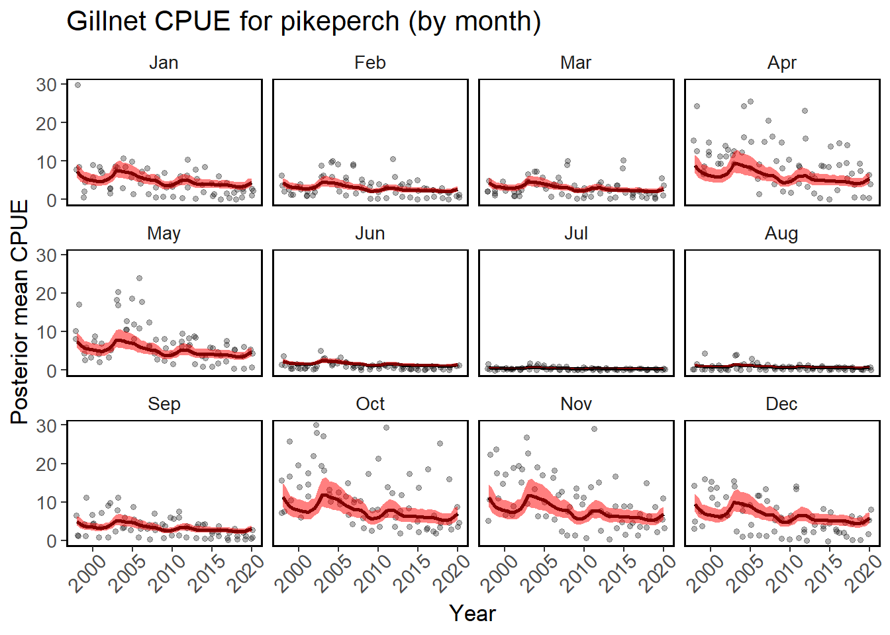

CHANGE TO LT: Overview of models
Sukūrėme ir pritaikėme visą spektrą įvairių statistinių ir mechanistinių modelių, kuriuos naudojome savo tyrimuose ir dalijamės su mokslo visuomene. Tikimės, kad šie modeliai pasitarnaus žuvininkystės tyrimuose bei bus naudingi priimant žuvų išteklių valdymo sprendimus. Šiuos modelius galite nemokamai naudoti nekomerciniais tikslais, tačiau prašome nurodyti pirminį šaltinį (straipsnius arba šią svetainę).
Modeliai, skirti standartizuoti sugavimus vienai pastangai (CPUE)
Mokslinės stebėsenos, verslinės ar megėjiškos žvejybos sugavimų duomenys yra dažnai naudojami žuvų populiacijos būklei ir tendencijoms vertinti. Vis dėlto tokie duomenys paprastai yra gan sudėtingi ir įvairūs, ir juos reikia standartizuoti. Yra keletas metodų, kuriuos galima naudoti sugavimų vienai pastangai (CPUE) standartizavimui, ir mes pateikiame tris galimus modelius, didėjančio sudėtingumo tvarka.
1. Standartizacija, paremta apibendrintaisiais tiesiniais modeliais (GLM)
Šis modelis gali būti naudojamas mokslinės stebėsenos arba verslinės žvejybos sugavimų duomenims. Čia taikome GLM modelį su “tweedie” skirstiniu ir išskiriame metines CPUE liekanas. Modelis pritaikytas penkioms paplitusioms Lietuvos gėlavandenių žuvų rūšims.
2. Modeliai, pritaikyti duomenims su nulinių reikšmių perviršiu
Jei sugavimo duomenys turi daug nulinių reikšmių, jie neatitiks tradicinių statistinių modelių prielaidų. Tokiems duomenims galima naudoti tiesinius modelius (GLM), kurie koreguojama nulių perviršį.

3. Bajeso modelis su INLA
Čia pristatome Bajeso modelį, kuris atsižvelgia į sugavimų autokoreliaciją laike ir erdvėje. Modelis naudoja Bajeso aproksimaciją, naudojant programinę biblioteką INLA.
Perteklinės produkcijos modeliai žuvų išteklių tyrimuose
Perteklinės produkcijos (PP) modeliai dažniausiai naudojami vertinant žuvų išteklius, kuriems trūksta detalizuotų amžiaus duomenų. Jie yra pagrįsti sugavimų (laimikių) ir populiacijos santykinio gausumo indekso (pvz., standartizuotos CPUE laiko eilutės iš auksčiau pateiktų modelių) kitimu laike. Šiuose modeliuose daroma prielaida, kad žuvų populiacijos gausa priklauso nuo jos atsinaujinimo greičio, aplinkos talpos ir sugavimų. PP modeliai buvo sėkmingai pritaikyti daugeliui žuvų išteklių visame pasaulyje ir, nepaisant prielaidų, dažnai veikia stebėtinai gerai, jeigu santykinio populiacijos gausumo ir sugavimų laiko eilutės yra patikimos.
4. Suprask PP modelius
LITHUANIAN: Šis paprastas modelis padės susipažinti su pagrindinėmis perteklinės produkcijos modelių prielaidomis. Naudodami šį modelį įvertinkite, kaip didžiausias tvarus laimikis priklauso nuo populiacijos atsikūrimo greičio bei žvejybinio mirtingumo. Atkreipkite dėmesį, kaip kartais didesnis žvejybinis mirtingumas nulemia mažesnius laimikius ilgalaikėje perspektyvoje.

5. Pritaikyk SP modelius naudojant JABBA
JABBA - tai sudėtingesnio tipo, Bajeso metodais paremta perteklinės produkcijos modelių sistema. Čia pateiktuose programiniuose koduose galite susipažinti su jos pritaikymu penkioms Lietuvos gėlavandenių žuvų rūšims iš Kuršių bei Kauno marių, arba naudoti kodus jūsų tiriamoms populiacijoms.
Žuvų augimo modeliai
Žuvų dydis ir augimas labai varijuoja laike ir erdvėje, nes jis priklauso nuo temperatūros, maisto prieinamumo ir daugelio kitų procesų. Todėl modeliavimas, kaip ir kodėl augimas gali keistis, ir kaip tai įvertinti, yra svarbi žuvininkystės tyrimų dalis.

6. Von-Bertalanffy augimo kreivė
Naudodami šį modelį galite tyrinėti Von-Bertalanffy funkcijos parametrus ir įvertinti, kaip ši augimo kreivė atitinka jūsų duomenis. Taip pat galite vizualizuoti, kada ir kaip dėl variacijos augime vyresnių žuvų amžiaus grupės tampa nebeatskiriamos pagal dydį.
7. Temperatūros įtaka augimui
Mechanistinis žuvies gyvenimo ciklo optimizavimo modelis, skirtas įvertinti, kaip temperatūros sąlygoti maitinimosi, metabolizmo ir dauginimosi pokyčiai gali paveikti augimą. Šį modelį galite paleisti programoje Excel arba R.
8. Augimo pokyčių nustatymas
Bajeso modelis, skirtas įvertinti augimo parametrų pokyčius pagal amžiaus ir ilgio duomenų laiko eilutes. Modelis taikomas žuvų augimo duomenims iš atominės elektrinės šildyto ežero Lietuvoje.
Mašininio mokymosi modeliai
Mašininis mokymasis (MM) leidžia greitai analizuoti didelius vaizdų ir kitokių duomenų rinkinius ir yra svarbus žingsnis palengvinant piliečių mokslu grindžiamus duomenų rinkimą ir apdorijimą. Vykdydami projektą sukūrėme du mašininio mokymosi modelius žuvų rūšims ir dydžiui nustatyti.
9. Mašininis mokymas žuvų rūšims atpažinti
Čia galite sužinoti apie mūsų mašininiu mokymu pagrįstus vaizdų klasifikavimo įrankius. Algoritmai buvo pritaikyti žuvų rūšims nustatyti, bet gali būti naudojami bet kokioms kitoms vaizdų klasėms.

10. Mašininis mokymas žuvų dydžiui nustatyti
Informacija apie žuvų dydį yra itin reikalinga priimant populiacijos valdymuo sprendimus, tačiau daugelis piliečių mokslo ar socialinių tinklų platformų jos nerenka. Todėl sukūrėme ir toliau tobuliname modelį, skirtą žuvų dydžiams nustatyti pagal žvejų, laikančių žuvis, nuotraukas.
Palydovinių duomenų analizė
Šiuo metu palydoviniai, nuotolinio stebėjimo duomenys gali būti renkami naudojant itin didelę laiko ir erdvinę skiriamąją gebą. Tačiau dažnai šiuos duomenis vis dar būna sunku pasiekti ir apdoroti. Mes sukūrėme keletą modelių ir įrankių, padedančių gauti ir analizuoti palydovinius vandens paviršiaus temperatūros ir optinės klasės (chlorofilo A) duomenis.

11. Palydoviniai temperatūros duomenys
Čia pateikiamas patogus naudoti modelis ir įrankis, skirtas išgauti ir analizuoti palydovinius vandens paviršiaus temperatūros stebėjimus iš „Google Earth Engine”. Jums reikės „Google” paskyros ir jūsų tiriamų vietų koordinačių.
12. Palydoviniai optiniai (chlorofilo A) duomenys
Šis įrankis padės išgauti vandens optinės klasės (chlorofilo A) duomenis iš palydovinių stebėjimų ir pritaikyti modelį, kad būtų galima išfiltruoti nepatikimus duomenis ir nustyti ežero klasę.
Individų dydžiais pagrįsti ekosistemų modeliai
Individų dydžiu pagrįsti bendrijų ir ekosistemų modeliai yra galingas įrankis, galintis numatyti įvairių žuvininkystės valdymo strategijų pasekmes, modeliuoti rūšių sąveiką, klimato kaitos poveikį ir kitus procesus. Šiame projekte kuriame individų dydžiu pagrįstą Kuršių marių ekosistemos modelį.

13. Individų dydžiu pagrįsti Kuršių marių ir Baltijos jūros ekosisteminiai
Sužinokite apie galimą klimato kaitos poveikį Baltijos jūrai, išnagrinėkite pirminį Kuršių marių modelį ir supraskite pagrindinius dydžiu pagrįsto modeliavimo principus, įgyvendintus R pakete mizer.